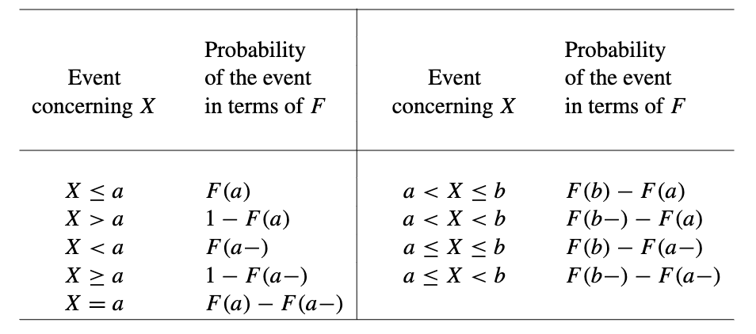
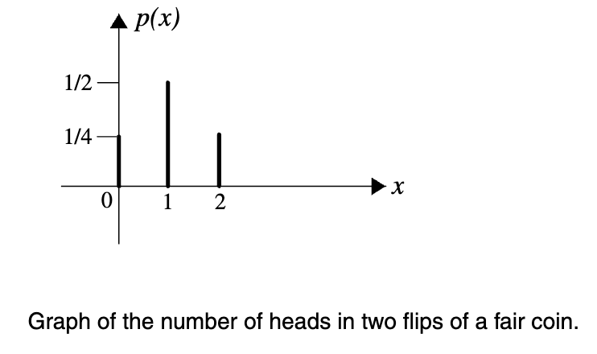
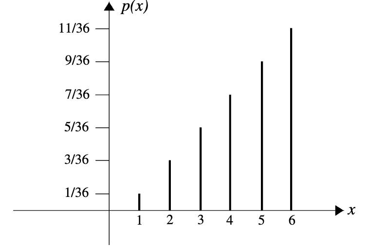
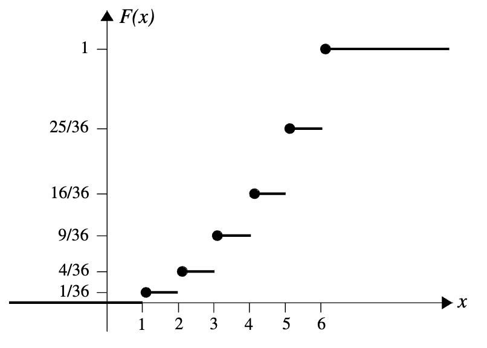
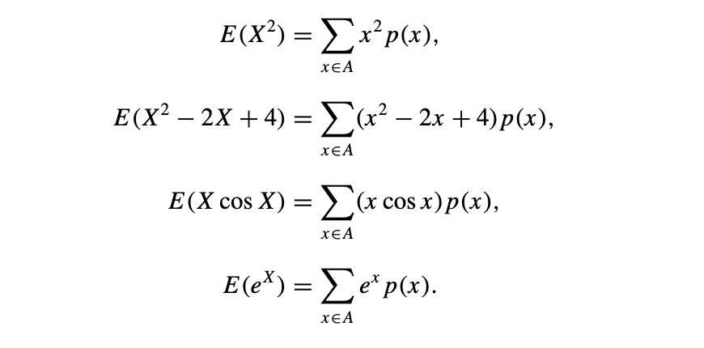
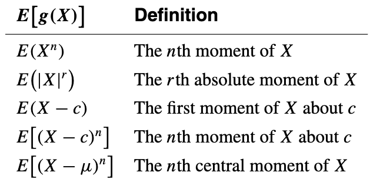

Distribution Functions and Discrete Random Variables
Random Variables
Definition
Let S be the sample space of an experiment. A real-valued function \(X:S\longrightarrow R\) is called a random variable of the experiment if, for each interval \(I\subseteq R\), {\(s:X(s)\in I\)} is an event.
In probability, the set {s : X(s) ∈ I } is often abbreviated as {X ∈ I }, or simply as X ∈ I
NOTE:
- \(X:S\longrightarrow R\) : \(X\) 是一个函数，它接受一个来自样本空间 \(S\) 的‘输入’（即一个实验结果），并‘输出’一个实数 实验：掷一次骰子。 样本空间 \(S\)**：\(\{1, 2, 3, 4, 5, 6\}\)。 随机变量 \(X\)：我们可以定义 \(X\) 为“掷出的点数”。 如果掷出的结果 \(s\) 是 3，那么 \(X(s) = X(3) = 3\)。 如果掷出的结果 \(s\) 是 5，那么 \(X(s) = X(5) = 5\)。 \(X\) 这个函数把 \(\{1, 2, 3, 4, 5, 6\}\) 这些“结果”映射到\(\{1, 2, 3, 4, 5, 6\}\) 这些“实数”上。
- \(I\subseteq R\), {\(s:X(s)\in I\)}: 样本空间 \(S\) 中，所有那些能使 \(X(s)\) 的值落在区间 \(I\) 内的'原始结果 \(s\)' 所组成的集合 随机变量 \(X\) 是掷出的点数。 假设我们关心“点数小于等于3”，那么区间 I 就是 \((-\infty, 3]\)。 我们要找的集合就是 \({s : X(s) \in (-\infty, 3]}\). 我们检查 \(S = \{1, 2, 3, 4, 5, 6\}\) 中每一个 \(s\)： \(X(1)=1\)，1 属于 \(I\) 吗？是。 \(X(2) = 2\)，2 属于 \(I\) 吗？是。 \(X(3) = 3\)，3 属于 \(I\) 吗？是。 \(X(4) = 4\)，4 属于 \(I\) 吗？否。
Distribution Function
Definition
If X is a random variable, then the function F defined on (−∞, +∞) by F (t) = P (X ≤ t) is called the distribution function of X.
Since F “accumulates” all of the probabilities of the values of X up to and including t, sometimes it is called the cumulative distribution function of X. The most important properties of the distribution functions are as follows: 1. F is nondecreasing; that is, if \(t\lt u\), then \(F(t)\le F(u)\). 2. \(\lim_{n\to\infty}F(t)=1\). This follows from the continuity property of the probability function (see Theorem 1.8 in Axioms of Probability). 3. \(\lim_{n\to-\infty}F(t)=0\). 4. F is right continuous. That is, for every t ∈ R , F (t+) = F (t).

Discrete Random Variables
Definitions of Discrete Random Variables
Definition1
A real-valued function p : R → R , defined by p(x) = P (X = x), is assigned and is called the probability mass function of X. (It is also called the probability function of X or the discrete probability function of X.)
Definition2
The probability mass function p of a random variable X whose set of possible values is {\(x_{1},x_{2},x_{3}...\)} is a function from R to R that satisfies the following properties.
- \(p(x)=0\) if \(x\notin \left\{x_{1},x_{2},x_{3},...\right\}\).
- \(p(x_{i})=P(X=x_{i})\) and hence \(p(x_{i})\ge 0(i=1,2,3...)\).
- \(\sum_{i=1}^{\infty}p(x_{i})=1\).

The distribution function F of a discrete random variable X, with the set of possible values \(\left\{x_{1},x_{2},x_{3},...\right\}\), is a step function. Assuming that \(x_{1}\lt x_{2}\lt x_{3}\lt ...\), we have that if \(t\lt x_{1}\), then \(F(t)=0\) if \(x_{1}\le t\lt x_{2}\), then $\(F(t)=P(X\le t)=P(X=x_{1})=p(x_{1});\)$ if \(x_{2}\le t\lt x_{3}\), then $\(F(t)=P(X\le t)=P(X=x_{1}\, or\,X=x_{2})=p(x_{1})+p(x_{2});\)$ and in general, if \(x_{n-1}\le t\lt x_{n},\) then $\(F(t)=\sum_{i=1}^{n-1}p(x_{i}).\)$


Expectations of Discrete Random Variables
Definition
The expected value of a discrete random variable X with the set of possible values A and probability mass function p(x) is defined by $\(E(X)=\sum_{x\in A}xp(x).\)$ We say that E(X) exists if this sum converges absolutely. The expected value of a random variable X is also called the mean, or the mathematical expectation, or simply the expectation of X. It is also occasionally denoted by E[X], EX, μX, or μ.
Theorem 4.1
If X is a constant random variable, that is, if P (X = c) = 1 for a constant c, then E(X) = c
Theorem 4.2
Let X be a discrete random variable with set of possible values A and probability mass function p(x), and let g be a real-valued function. Then g(X) is a random variable with $\(E[g(X)]=\sum_{x\in A}g(x)p(x)\)$

Corollary
Let X be a discrete random variable; \(g_{1},g_{2},...,g_{n}\) be real-valued functions, and let \(\alpha_{1},\alpha_{2},...,\alpha_{n}\) be real numbers. Then $\(E[\alpha_{1}g_{1}(X)+\alpha_{2}g_{2}(X)+...+\alpha_{n}g_{n}(X)]=\alpha_{1}E[g_{1}(X)]+\alpha_{2}E[g_{2}(X)]+...+\alpha_{n}E[g_{n}(X)]\)$ Moreover, this corollary implies that E(X) is linear. That is, if \(\alpha,\beta\in R\), then $\(E(\alpha X+\beta=\alpha E(X)+\beta.\)$
Variances and Moments of Discrete Random Variables
Definition
Let X be a discrete random variable with a set of possible values A, probability mass function p(x), and E(X) = μ. Then \(\sigma_{X}\,and\, Var(X)\), called the standard deviation and the variance of X, respectively, are defined by $\(\sigma_{X}=\sqrt{E[(X-\mu)^{2}]}\)$ $\(Var(X)=E[(X-\mu)^{2}]=\sum_{x\in A}(x-\mu)^{2}p(x).\)$
Theorem 4.3
$\(Var(X)=E(X^{2})-[E(X)]^{2}.\)$ \(\Rightarrow E(X^{2})\ge [E(X)]^{2}\)
Theorem 4.4
Let X be a discrete random variable; then for constants a and b we have that $\(Var(aX+b)=a^{2}Var(X),\)$ $\(\sigma_{aX+b}=|a|\sigma_{X}.\)$
Moments
